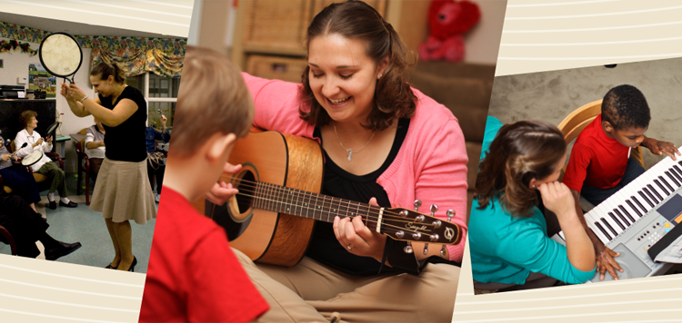
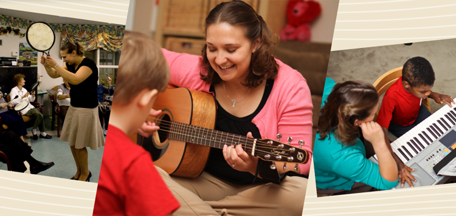

Specializing in serving aging adults, those with autism and other developmental challenges, individuals with neurological impairments and their families and caregivers, North Austin Music Therapy offers excellence in music-based interventions designed to increase and maintain maximum levels of functioning and improve quality of life. Backed by research and driven by results, North Austin Music Therapy is proud to serve clients across the greater Austin area including Round Rock, Georgetown, Leander, Cedar Park, Pflugerville, Austin, Bee Caves, and surrounding communities.
North Austin Music Therapy offers both individual and group sessions in a variety of settings and seeks to bring the power of music therapy to individuals in the comfort of home, in residential communities, and to a variety of community programs.
Building on years of academic training and diverse clinical experiences, North Austin Music Therapy provides the highest quality of music therapy and related services, in addition to a success-oriented environment to foster growth and enable change. Committed to an approach that fuses compassion and excellence, North Austin Music Therapy incorporates a variety of therapeutic approaches through innovative groups and creative interventions to best serve its clients.
Music therapy is an evidence-based and goal-directed process that uses musical interventions to address non-musical needs and improve functioning in areas such as cognition, attention, communication, motor skills, and social skills; in addition to improving mental and emotional health.
Music therapy offers a unique approach to treatment as music stimulates all areas of the brain simultaneously, and is in fact the only sensory experience to do so.
Learn more >>We offer music therapy sessions, adaptive music lessons, and music enrichment sessions on a one-on-one basis.
Innovative group program designed for aging adults in residential communities and respite programs.
Customized consultations designed to teach others how to effectively use music with the loved ones or clients in their care. Available locally and nation-wide.
View all services >>